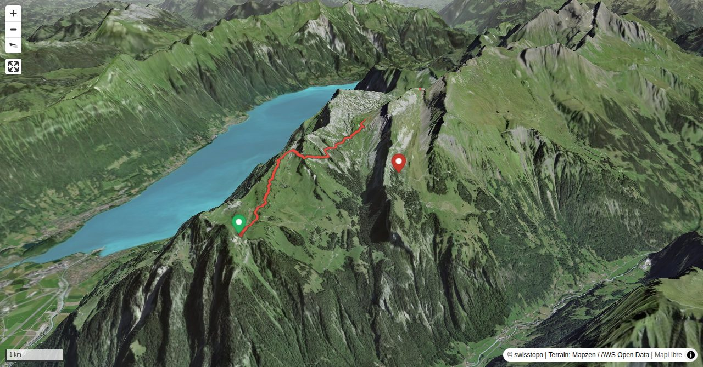

The definitive Berner Oberland ridge traverse: from Schynige Platte to First via Berghaus Männdlenen, Faulhorn, and Bachalpsee. The Eiger, Mönch, and Jungfrau are in view almost the entire way. The high point is the Faulhorn (2681 m) with its historic mountain hotel — the oldest in the Alps.
Quick Facts
| Summit elevation | 2681 m (Faulhorn) |
|---|---|
| Difficulty | SAC T2 Mountain hiking on marked trails with uneven terrain and some sustained ascent. Guide |
| Trailhead | Schynige Platte |
| Distance | 7.4 km (out-and-back) |
| Total ascent | ~490 m |
| Elevation range | 1910-2344 m |
| Route sources | SAC Route Portal |
Photos

All photos: SAC Route Portal
Interactive Route Map
Map tiles: © swisstopo (CC BY 3.0) | © OpenStreetMap contributors | Map library: Leaflet. Route line is approximate — verify against the SAC Route Portal before going.
3D Terrain View

Tiles: © swisstopo (SWISSIMAGE) + AWS Terrain Tiles. Powered by MapLibre GL JS. Open fullscreen ↗
Route Details
Schynige Platte – First traverse
Source: SAC Route Portal
Getting There & Back
Start: Schynige Platte (1970 m)
Directions from to Schynige Platte
Route returns to Schynige Platte.
Start: Cog railway from Wilderswil to Schynige Platte.
End: Gondola from First down to Grindelwald, then bus/train.
Timetables: jungfrau.ch
Weather Planning
7-day summit forecast (live)
Loading forecast…
Elevation Profile
Computed from the inlined GPX track (elevations from SwissTopo height API).